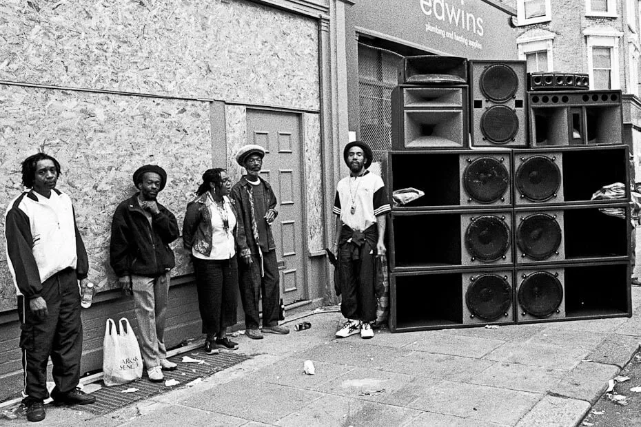

Gabriel Lima
Atuando na área de N2 C6 Bank
Oi, tudo bem? Sou o Gabriel, também conhecido como ZK, mais na verdade pode me chamar como preferir haha. Tenho 20 anos, sou de Diadema-SP, filho da Ione e do Samuel e neto da Dona Marina. Sou banqueiro, atualmente atuando no C6 Bank. Apesar de pouca idade contenho um reportório interessante. Sou formado em programação, tenho 2 cursos de capacitação concluídos, cursos de Word, Excel, etc. Gosto de conhecer coisas novas e estar presente para me aprimorar cada vez mais.
 ZKimagens/perfil.jpg
ZKimagens/perfil.jpg
Inteligência Artificial
A Inteligência Artificial passou de experiências acadêmicas e sistemas simples para ferramentas capazes de trabalhar com linguagem, imagens, áudio, código e grandes volumes de informação. Saber usar IA não significa apenas saber fazer perguntas: também envolve verificar resultados, proteger dados e usar a tecnologia com responsabilidade. Quando bem utilizada, a IA pode aumentar produtividade, criatividade e aprendizado.
- Verificar resultados
- Proteger dados
- Usar com responsabilidade
Vídeo
Dê o play e acompanhe esta apresentação em movimento.
Legenda do vídeo: troque este texto pela descrição que preferir.
Áudio
Aperte o play e escute.
Título do áudio
CONHEÇA O DANCEHALL E COMO UMA CULTURA MUSICAL MUDOU O FUTURO DA TECNOLOGIA.
Imagem
Passe o mouse (ou toque) para ver a imagem ganhar cor.

Imagemimagens/imagem.jpgInfográfico
Em telas pequenas, toque no infográfico para abrir em tela cheia e arrastar para ver os detalhes.
COMO A CULTURA DANCEHALL SE MOVIMENTA? COMO A NEGRITUDE RESISTE?
Animação
Uma ideia em movimento.
Legenda da animação: troque este texto pela descrição que preferir.
Música
Uma produção sonora para fechar o set. Aumente o volume.